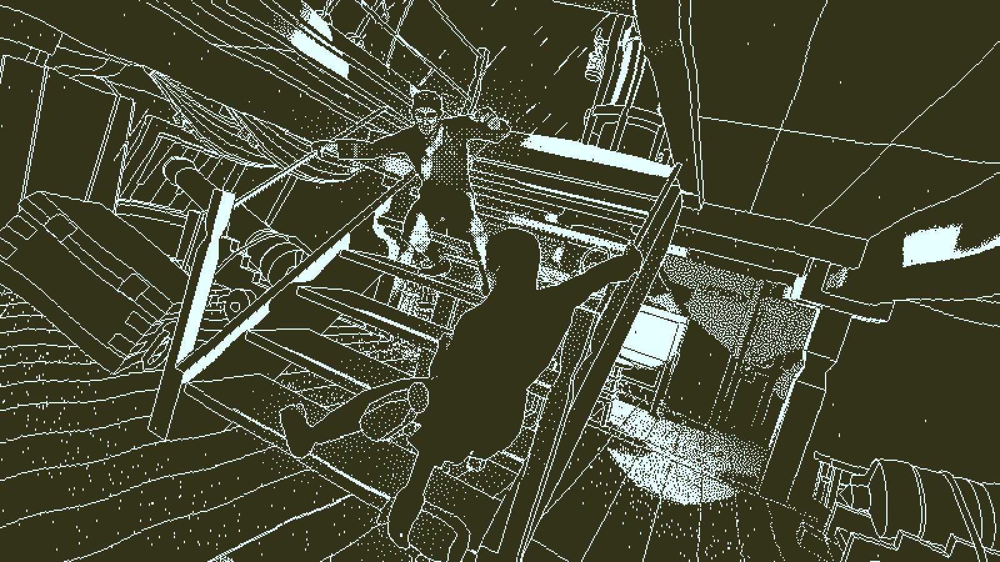

A ship drifts into harbor, damaged and abandoned. The winds are calm, the wood gently creaks, and the ocean is vast and empty. In the present, all is still, and all is silent. Five years past its disappearance, the Obra Dinn reappears, with no crew or passengers to bear witness to its story. Thanks to you, though, their corpses will barely suffice.
The Return of the Obra Dinn is a really fun game about being an insurance adjuster. Not just an insurance adjuster; a magical insurance adjuster. For the East India Company, no less. Armed with the Memento Mortem, a pocket watch that allows you to observe the moment anything died, as long as you have access to a piece of its remains. Using this, the gameplay revolves around piecing together (some of) the story of what happened on the titular ship.
This premise is great, and the execution makes it work. Within the game, you only ever see the exact instant the passenger in question dies; you can hear the moments prior, relayed by visceral sound design and voice acting, before the instant of death appears before you, usually a small environment in which you wander around and pick up details. With the way the progression works, you will typically move backward through the story, with the most obvious corpse to check on being one of the very last to die chronologically. The result is an appropriately confusing story that delivers on all the things you might expect of the tale of a voyage lost at sea, almost to the point of exaggeration of the number of things that could go wrong. In between deliberate killings and supernatural events, you'll find the corpse of someone who simply died in a standard accident one might expect on a ship in the early 1800s.
Death is the entire game, and your relationship to it changes over time. For each one, the sudden reveal of the scene gives each a shock value, especially with how grisly many of them can get. But once you get a picture of each death, and begin to set to the task of determining the identities of every person on the ship, each death becomes a tool for understanding life, searching through the fringes and small details of each scene, with the death itself becoming the part of the scene that is mundane and known. As I settled into this state of mind, the role set out for me by the game's story started to line up with how I felt. I'm not here to pass judgement on anyone for what happened; my role here is simply to catalogue and deduce. By the time I was down to the last few of the ship's characters, the boat was beginning to feel downright claustrophobic, and I was happy to leave, even as I enjoyed my time there.
Overall, the game is very good! The art is easy to love, the sound design carries a lot of weight to mask its simplicity, and it reeks of death. In a good way.
